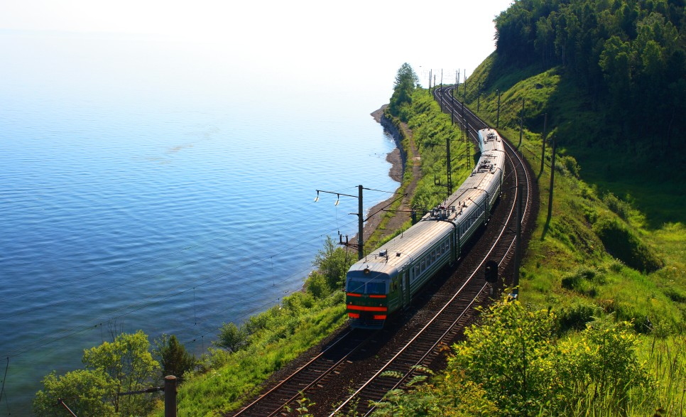
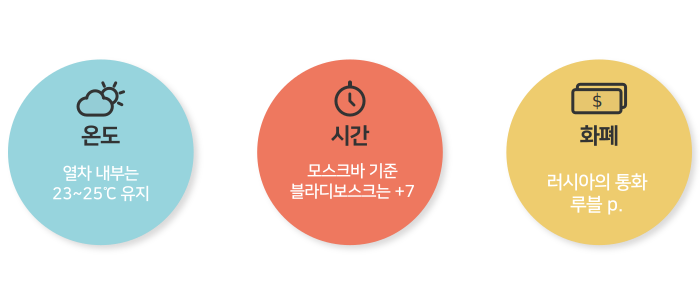
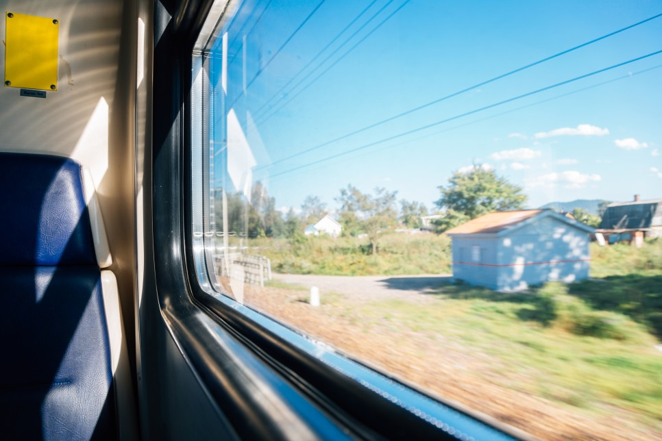
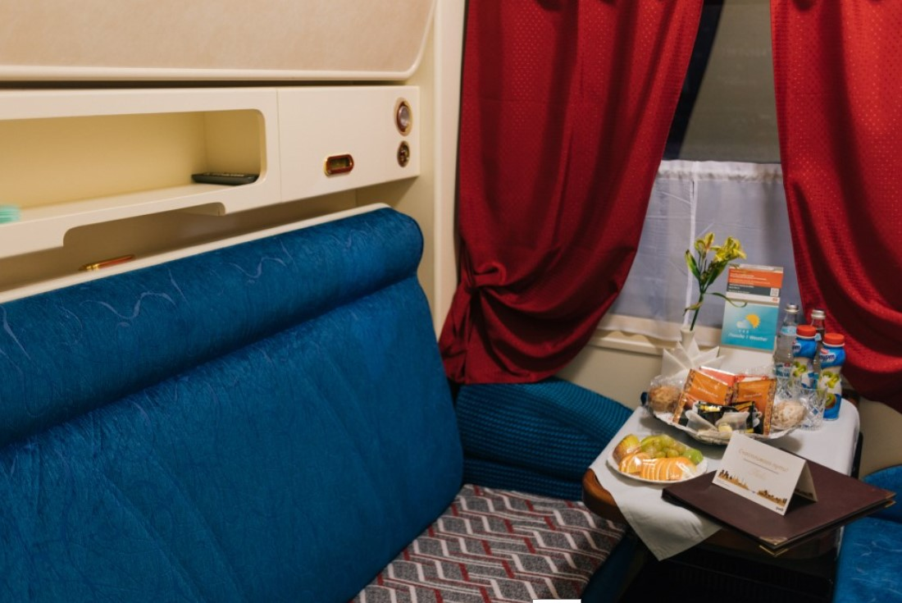
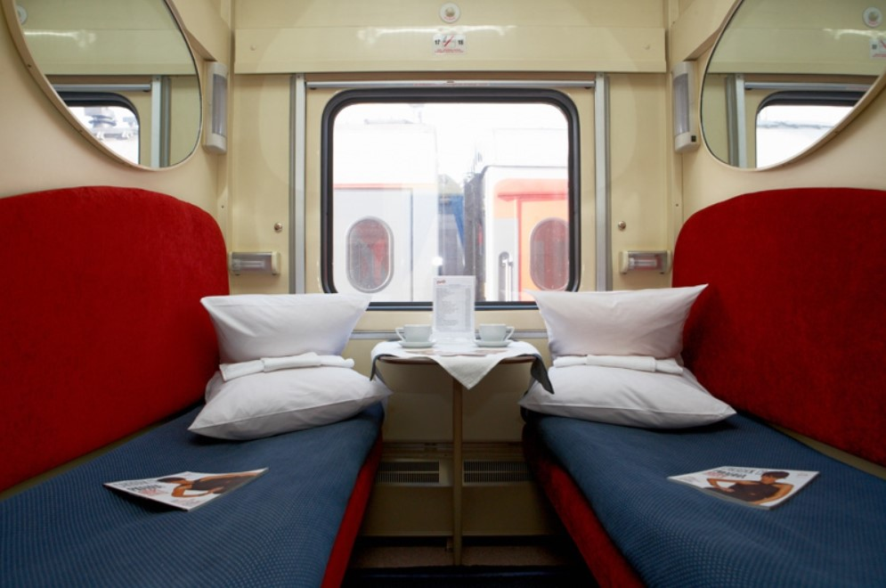
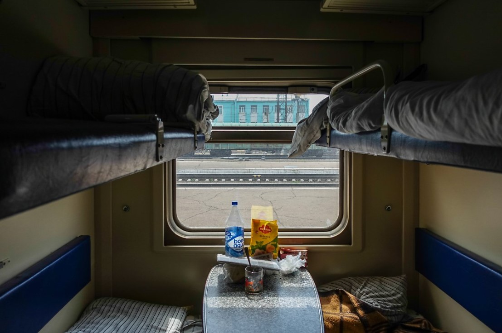
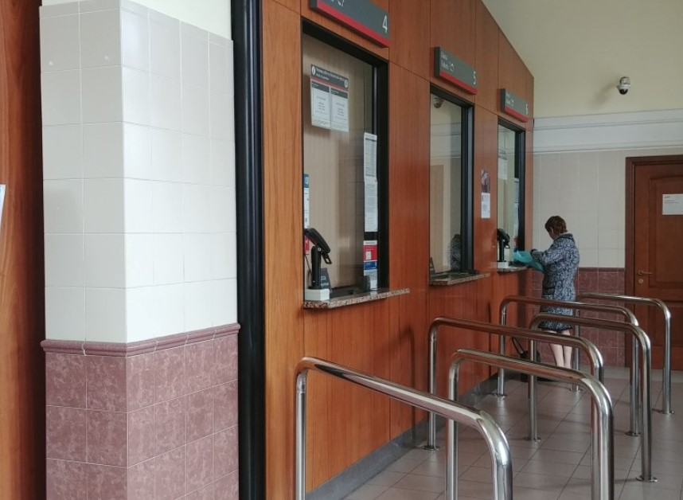
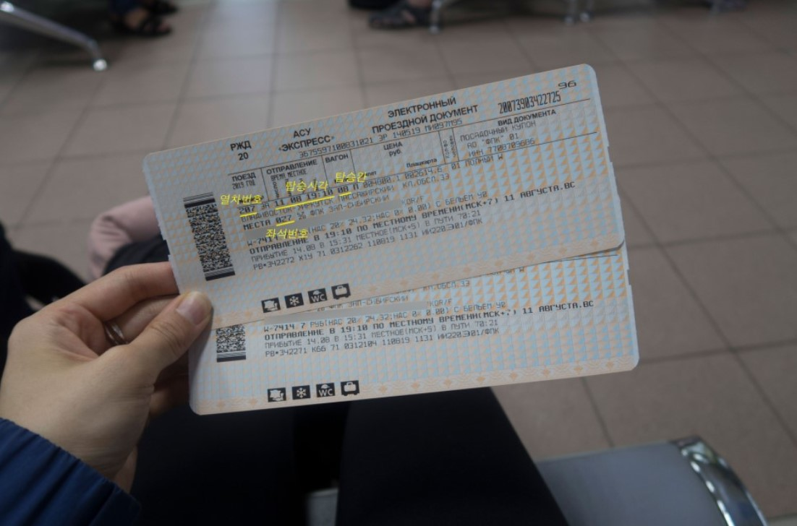

시간을 달리는 세상에서 가장 긴 철도

시베리아 횡단철도는 러시아 블라디보스톡에서 모스크바까지 총 길이 9,288km로 지구 둘레의 1/4을 달리는 열차이자 세계에서 가장 긴 노선으로 시작점에서부터 종착지까지 중간에 내리지 않아도 약 7일, 164시간이 소요됩니다.
7일이라는 시간동안 열차는 87개의 도시 63개의 정차역을 지나게 되는데요, 정차역에는 짧게는 15분, 길게는 1시간 정도 정차합니다.
이 열차의 흥미로운 점 중 하나는 러시아를 동서로 가로지르면서 총 7번의 시차가 바뀐다는 것입니다.
블라디보스톡과 모스크바가 7시간의 시차가 나기 때문에 지역이 바뀔때마다 1시간씩 시차가 생기게 된답니다.
각자 일정에 맞춰 이동하는 동안 각자 마련된 공간에서 숙식을 해결하며, 아름다운 바깥 풍경도 감상하고, 새로운 사람들과의 만남, 영화 감상, 독서 등 각자의 방식대로 여유로운 여행을 즐길 수 있는 이색적인 경험이 가능합니다. 여행을 좋아하는 분들에게 버킷리스트로 꼽히는 시베리아 횡단열차. 러시아 현지인들도 많이 이용하는 열차이므로 현지의 모습도 친근하게 접할 수 있으니 꼭 경험해보길 추천합니다 !

시베리아 횡단열차 좌석 종류

시베리아 횡단열차는 최상위 등급인 디럭스, 1등석(2인실), 2등석(4인실), 3등석(6인실), 등 총 4가지 타입으로 구성됩니다.
001부터 100까지 열차번호가 있으며, 번호가 낮을 수록 신식 기차이기 때문에 시설이 좋고 속도도 더 빠릅니다.
그렇기 때문에 가장 최근에 만들어진 001 기차의 경우 다른 열차보다 티켓값이 비싸답니다.
Tip. 좌석 번호가 홀수면 1층 침대, 짝수면 2층 침대로 구분되니 예매 시, 참고하면 좋습니다.
프리미엄 디럭스

2인 1실로, 'Premium' 표시가 있는 열차에만 존재하는 최상위 등급입니다.
예약 페이지에 De Luxe Sleeping으로 나옵니다.
객신의 정원은 12명이고, 2층 침대와 1층 침대가 있는데 1층 침대는 쇼파를 펼치는 형태로 넓습니다.
각 방 안에 화장실 및 샤워실 갖추어져 있고 추가 수화물이 무료로 제공되며 대형 애완동물과도 탈 수 있습니다.
전기콘센트는 물론이고 개별 에어컨과 TV, DVD플레이어 등의 시설을 갖춘 움직이는 호텔입니다.
평균가격은 20~30만원입니다.
1등석

2인 1실의 1등석은 '륙스'라고 불리는 럭셔리하고 좋은만큼 가격대가 높은 객실입니다.
단거리 열차에는 많이 없으며, 장거리 열차에도 없는 경우가 있습니다.
예약 페이지에 1-cl Sleeping Compt.으로 나옵니다.
내부에는 차장을 호출할 수 있는 벨이 별도로 마련되어 있습니다.
객실만 분리되어있을 뿐, 화장실은 공용을 이용해야 합니다.
객실의 정원은 16명이고, 2층 침대가 아닌 1층 침대를 사용합니다.
다만, 다른 여행자들과 교류를 하기 어렵고 시설 대비 가격대가 지나치게 비싸 가성비가 좋지는 않습니다.
평균가격은 40~60만원입니다.
2등석

2등석인 '꾸뻬'는 4인 1실로 긴 복도를 따로 방으로 구성되어 있습니다.
거의 모든 열차에 장착되어 있는 등급으로, 룩스 등급이 없는 열차에서는 이 등급이 최상위 등급이다.
예약 페이지에 2-cl Sleepong Compt.으로 나옵니다.
방안에 위·아래로 두 자리씩 되어 있으며 침대 아래와 문 위데 다락으로 짐을 놓을 수 있는 공간이 있습니다.
내부에서 문을 잠글 수 있는 폐쇄형 객실이기 때문에 짐 분실 위험이 적습니다.
객실의 정원은 24~28명이고, 가족단위 또는 일행이 여럿일 경우 추천하는 객실입니다.
동성만 이용할 수 있는 방이 있습니다. 다만, 열차에 따라 여성 전용 방만 있거나 '성별 구분'이라고 써 있지만 막상 예매할 때 보면 '남+여'만 있다든지 할 수 있습니다.
평균가격은 20~30만원입니다.
3등석

'플라츠카르타'라고 불리는 3등석은 개방형 6인실로 가장 많은 여행자들이 선택하는 객실입니다.
예약 페이지에 3-cl Open Sleeping으로 나옵니다.
거의 모든 열차에 장착되어 있는 등급으로, 세계 각지에서 온 여행자들과 친분을 쌓기에는 좋지만 프라이버시 보장이 되지 않는다는 단점이 있습니다.
객실의 정원은 54명으로, 개방된 구조여서 54개의 침대가 한 객실을 이룬다고 생각하면 됩니다.
당연히 2층 침대보다 1층 침대를 잡는 것이 훨씩 편하지만, 1층의 침대는 낮시간대에는 의자로 공유해야합니다.
샤워실이 없기 때문에 샤워를 하기 위해서는 1등석 쪽으로 이동해야하며 이용료는 150루블(약 3천원) 정도합니다.
복도쪽 자리는 사람들이 자주 왔다갔다해 부산스러우니 안쪽자리를 예매하는 것을 추천합니다.
화잘실 바로 앞 자리도 비추천합니다.
평균가격은 17~20만원입니다.
Tip. 객차 1량에 공용 콘센트가 2개뿐이니 6인실 이용 시에는 멀티어댑터를 꼭 챙겨가는 것이 좋습니다.
기차역에서 탑승

시베리아 횡단열차는 블라디보스토크에서 시작하는 열차와 모스크바에서 시작하는 열차가 있습니다. 한국인들은 대게 블라디보스토크에서 시작하는 시베리아 횡단열차를 타게 됩니다. 기차역 맞은 편에는 마트가 있어서 물이나 기타 간식 및 식재료는 이 마트에서 구입하면 됩니다.
Tip. 블라디보스토크는 최근 한국인 관광객이 늘었기 때문에 마트에서 한국 음식들을 쉽게 살 수 있어 한국에서부터 음식을 무리해서 챙길 필요는 없습니다.

기차역에 들어서면 1단계 보안검사가 있습니다. 보안검사를 통과하고, 매표소에 가서 티켓을 구매하거나 실물권으로 바꿀 수 있습니다. 예매한 티켓과 여권을 제시하면 실물권으로 교환해줍니다.

탑승권을 받으면 열차 번호, 탑승 날짜와 시각, 탑승칸, 좌석번호를 확인해봅니다. 열차는 출발시간 1시간~30분 전부터 탑승이 가능하니 짐 넣기 편하게 미리 탑승하는 것을 추천합니다. 시베리아 횡단열차는 내가 타는 열차 칸에서만 탈 수 있습니다. 그래서 탑승권을 잘 확인해야 하고, 타는 열차 칸 앞에 서서 역무원에게 여권, 티켓 검사를 받고 들어가면 됩니다.